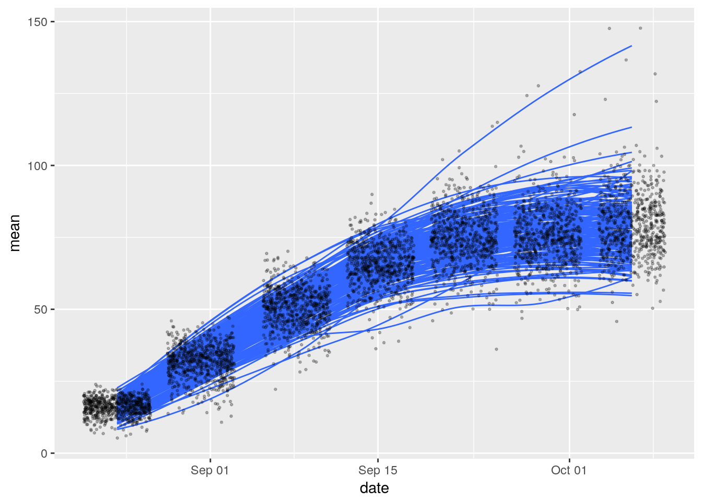

Note: Some of the commands below, particularly those accessing the terraref database from within RStudio, require being logged into the NDS Analytics Workbench. This requires signing up for the TERRA REF Alpha User program.
Objectives
Learning how to access data on terraref database via PostgreSQL
- Learning how to manipulate dat using the
dplyrlibrary, in particular: - filtering, subsetting, summarizing, new variables with dplyr
Accessing TERRA REF via PostgreSQL
We want to access the TERRA REF database. We will do it using the dplyr, library which makes it easier to connect to databases and work with data inside the database. This can be particularly useful with large datasets, where processing can be done before reading the data into memory.
library(dplyr)##
## Attaching package: 'dplyr'## The following objects are masked from 'package:stats':
##
## filter, lag## The following objects are masked from 'package:base':
##
## intersect, setdiff, setequal, unionYou can then connect to the database using (note: this is one of those commands that require you to be working in the NDS Analytics Workbench):
bety_src <- src_postgres(dbname = "bety",
password = 'DelchevskoOro',
host = 'bety6.ncsa.illinois.edu',
user = 'viewer',
port = 5432)filtering / subsetting
Let’s get some data:
traits <- tbl(bety_src, 'traits', n=Inf)
variables <- tbl(bety_src, 'variables') %>%
mutate(variable_id = id, trait = name)
sites <- tbl(bety_src, 'sites') %>%
mutate(site_id = id) %>%
dplyr::select(-geometry)## Warning in postgresqlExecStatement(conn, statement, ...): RS-DBI driver
## warning: (unrecognized PostgreSQL field type geometry (id:18962) in column
## 17)cultivars <- tbl(bety_src, 'cultivars') %>%
mutate(cultivar_id = id, cultivar = name)In the above code the symbol %>% is a pipe from the dplyr library, it passes the left hand side to the first argument slot of the right hand side.
Using filter we can pick what we see based on their values:
traits_variables <- traits %>%
left_join(variables, by = 'variable_id') %>%
left_join(sites, by = 'site_id') %>%
left_join(cultivars, by = 'cultivar_id') %>%
dplyr::select(date, sitename, cultivar, trait, mean) %>%
filter(trait == 'canopy_height') %>%
collect()
traits_variables_season_2 <- traits_variables %>%
filter(grepl("Season 2",sitename))grouping and summarizing
One can combine the group_by and summarize functions to get a summary of the data we pulled:
traits_variables_season_2 %>%
group_by(date) %>%
summarize(mean = mean(mean), n =n())## # A tibble: 7 × 3
## date mean n
## <dttm> <dbl> <int>
## 1 2016-08-24 05:00:00 16.09714 700
## 2 2016-08-31 05:00:00 31.79857 700
## 3 2016-09-08 05:00:00 50.62000 700
## 4 2016-09-15 05:00:00 65.55000 700
## 5 2016-09-22 05:00:00 74.89000 700
## 6 2016-09-29 05:00:00 75.52647 699
## 7 2016-10-06 05:00:00 79.28755 699canopy_heights <- traits_variables_season_2 %>%
group_by(date, cultivar) %>%
summarize(mean = mean(mean), n =n())Plotting with ggplot
The ggplot2 library (for more see here) can be used to create graphics.
library(ggplot2)An example using the data we pulled before:
ggplot(data = traits_variables_season_2,
aes(x = date, y = mean, group = cultivar)) +
geom_smooth(se = FALSE, alpha = 0.25, size = 0.5) +
geom_point(alpha = 0.25, size = 0.5, position = 'jitter')## `geom_smooth()` using method = 'loess'
Another example:
### filter a subset of 25 genotypes
set.seed(1000) # to reproducibly return the same 25
height_season_2_subset <- traits_variables_season_2 %>%
filter(cultivar %in% sample(unique(traits_variables_season_2$cultivar, 25)))
# how many unique values of cultivar_id?
#height_season_2_subset %>% group_by(cultivar_id, date) %>% summarize(n())
ggplot(data = height_season_2_subset,
aes(x = date, y = mean, color = as.factor(cultivar))) +
geom_smooth(se = FALSE, alpha = 0.25, size = 0.5) +
geom_point(alpha = 0.25, size = 0.5)## `geom_smooth()` using method = 'loess'Faceting
Using ggplot2 we can partition a plot into a matrix of panels. Here’s an example:
ggplot(data = height_season_2_subset,
aes(x = date, y = mean)) +
geom_smooth(se = FALSE) +
geom_point() +
facet_wrap(~cultivar) +
ggthemes::theme_tufte()## `geom_smooth()` using method = 'loess'Other plots
Here is an example of a histogram:
ggplot(data = height_season_2_subset,
aes(mean, fill = date)) +
geom_histogram() +
facet_wrap(~cultivar) +
theme_bw()## `stat_bin()` using `bins = 30`. Pick better value with `binwidth`.Try making plots using the following functions: *
geom_boxplot*geom_violin
Visualization in R using ggplot
Some references for using ggplot:
- R for data science data-visualization
- Software Carpentry 8